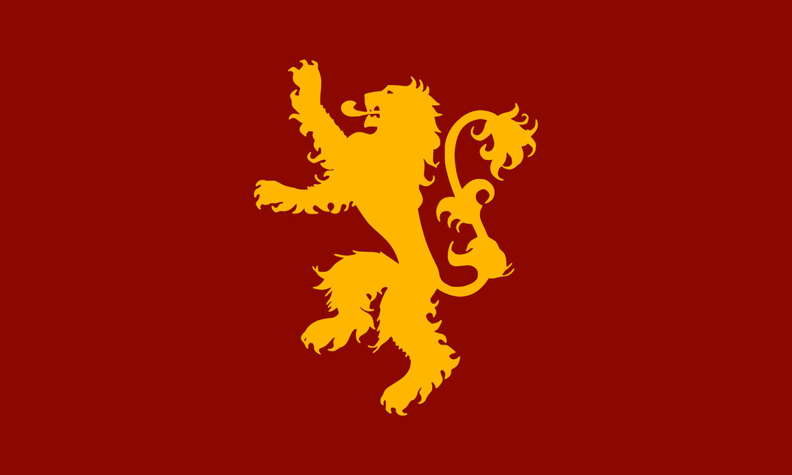

Great House of Westeros
House Gardener of HighGarden
'Growing Strong'
The Great House is now extinct and its founder was Garth Greenhand. Many house can trace their descent from him, including House Tyrell and House Florent. They depicted a green hand on a white shield.
The Gardeners became extinct when Aegon the Conqueror invaded Westeros. The King of the Reach, Mern IX, joined forces with the King of the Rock, Loren I, to challenge the invaders. In the battle, that became known as the Field of Fire, King Mern died incinerated when Aegon unleashed his three dragons, Vhagar, Meraxes and Balerion the Black Dread, against the combined forces of the Reach and the Rock. Harlen Tyrell, the steward of Highgarden, surrendered the castle to Aegon, and he was afterward made Lord of the Reach and Warden of the South.
Bannermen - House Tyrell, House Ashford, House Caswell, Houser Crane and House Oakheart.House Tyrell of HighGarden
'Growing Strong'

The house took contorl of the region from House Gardener during the Targaryen Conquest. In the current generation, House Tyrell is a stable and honestly loving family, with none of the internal rivalries that are to be found in House Lannister and House Baratheon. Thus the relationships between Lord Mace and his children, and between siblings like Loras and Margaery, are genuine and uncomplicated.
Highgarden is among the most beautiful castles in the Seven Kingdoms. Situated on a broad, symmetrically shaped hill, the castle includes three concentric tiers of white stone walls, which increase in height and thickness as one travels upwards.
Bannermen - House Ashford, House Caswell, Houser Crane and House Oakheart.
House Stark of Winterfell
'Winter is coming'.
 House Stark's sigil is a grey direwolf on a white background, over a green escutcheon. They are one of the few noble Houses whose family motto is not a boast or threat. Instead, the House Stark family motto is a warning, one that, no matter the circumstances, will always be relevant: "Winter Is Coming."
House Stark's sigil is a grey direwolf on a white background, over a green escutcheon. They are one of the few noble Houses whose family motto is not a boast or threat. Instead, the House Stark family motto is a warning, one that, no matter the circumstances, will always be relevant: "Winter Is Coming."
House Stark has ruled over the North for genrations and this has streched over eigth thousand years, as either kinds or wardens of the North.
Bannermen - House Tully, House Mormont, House Seaworth, House Umber, House Bolton.House Lannister of Casterly Rock
'Hear me Roar!'
Unoffical motto is A Lannister always pays his debts.
 House Lannister is one of the great house of Westeros and is one of the richest/ most powerful families in the land. They now control the seven kingdoms due to the extinction of House of Baratheon.
The conspiracy about this family in which they was a incestouos relationship of Cersei and Jamie had came out and cause the War of the Five Kings.
Bannermen - House Kayce, House Faircastle, House Crag and House Silverhill.